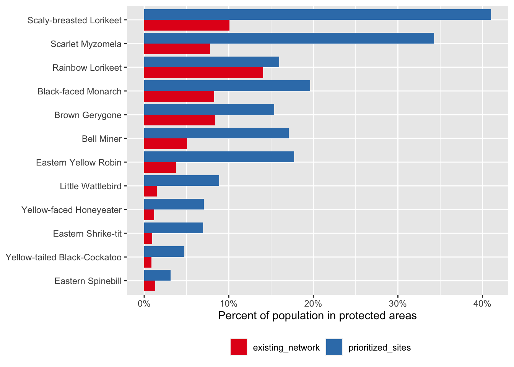

library(dplyr)
library(ebirdst)
library(exactextractr)
library(forcats)
library(ggplot2)
library(readr)
library(sf)
library(stringr)
library(terra)
library(tidyr)2 eBird Status Data Products
The eBird Status and Trends project uses full-annual cycle machine-learning models combining eBird data with remote-sensing data and accounting for variation in observer behavior and effort to produce high resolution, weekly estimates of range boundaries, occurrence rate, and relative abundance of bird species. The latest version, with estimates for the year 2021, includes results for 2,282 species globally. Interactive visualizations for these species are available through the eBird Status and Trends website and the eBird Status Data Products are available through the R package ebirdst.
This workshop will introduce attendees to the eBird Status Data Products and the ebirdst R package developed specifically for working with these data. We will introduce attendees to the range of available data, then demonstrate how to download these data products and load them into R for further analysis. Next we’ll work through a series of applications. Let’s start by loading the packages we’ll use throughout this workshop.
This workshop is being co-taught by members of Red de Observadores de Aves, the eBird partner in Chile, so many of the examples will focus on Chilean birds such as the Green-backed Firecown.

2.1 Data access
Access to the eBird Status Data Products is granted through an Access Request Form at: https://ebird.org/st/request. The terms of use have been desiged to be quite permissive in many cases, particularly academic and research use. After reading the eBird Status and Trends Products Terms of Use and filling out the Access Request Form you will be provided with an alphanumeric access key. To store the access key so it can be accessed by R and the ebirdst package, run the following (replacing "XXXXXXXXX" with your actual key):
set_ebirdst_access_key("XXXXXXXXX")Then immediately restart R. This will save the access key as the environment variable EBIRDST_KEY in your .Renviron file so it’s accessible within your R session.
Checkpoint
To ensure your data access key is working, attempt run the following code, which will download a single small file. Speak to the instructor if this doesn’t work.
ebirdst_download("grbfir1", pattern = "abundance_median_lr_2021", force = TRUE)2.2 Status and Trends species
The ebirdst_runs object is a data frame listing all the available species:
glimpse(ebirdst_runs)
#> Rows: 2,282
#> Columns: 23
#> $ species_code <chr> "grerhe1", "higtin1", "gretin1", …
#> $ scientific_name <chr> "Rhea americana", "Nothocercus bo…
#> $ common_name <chr> "Greater Rhea", "Highland Tinamou…
#> $ resident <lgl> TRUE, TRUE, TRUE, TRUE, TRUE, TRU…
#> $ breeding_quality <chr> NA, NA, NA, NA, NA, NA, NA, NA, N…
#> $ breeding_range_modeled <chr> NA, NA, NA, NA, NA, NA, NA, NA, N…
#> $ breeding_start <date> NA, NA, NA, NA, NA, NA, NA, NA, …
#> $ breeding_end <date> NA, NA, NA, NA, NA, NA, NA, NA, …
#> $ nonbreeding_quality <chr> NA, NA, NA, NA, NA, NA, NA, NA, N…
#> $ nonbreeding_range_modeled <chr> NA, NA, NA, NA, NA, NA, NA, NA, N…
#> $ nonbreeding_start <date> NA, NA, NA, NA, NA, NA, NA, NA, …
#> $ nonbreeding_end <date> NA, NA, NA, NA, NA, NA, NA, NA, …
#> $ postbreeding_migration_quality <chr> NA, NA, NA, NA, NA, NA, NA, NA, N…
#> $ postbreeding_migration_range_modeled <chr> NA, NA, NA, NA, NA, NA, NA, NA, N…
#> $ postbreeding_migration_start <date> NA, NA, NA, NA, NA, NA, NA, NA, …
#> $ postbreeding_migration_end <date> NA, NA, NA, NA, NA, NA, NA, NA, …
#> $ prebreeding_migration_quality <chr> NA, NA, NA, NA, NA, NA, NA, NA, N…
#> $ prebreeding_migration_range_modeled <chr> NA, NA, NA, NA, NA, NA, NA, NA, N…
#> $ prebreeding_migration_start <date> NA, NA, NA, NA, NA, NA, NA, NA, …
#> $ prebreeding_migration_end <date> NA, NA, NA, NA, NA, NA, NA, NA, …
#> $ resident_quality <chr> "2", "1", "2", "3", "3", "2", "2"…
#> $ resident_start <date> 2021-01-04, 2021-01-04, 2021-01-…
#> $ resident_end <date> 2021-12-28, 2021-12-28, 2021-12-…If you’re working in RStudio, you can use View() to interactively explore this data frame. You can also consult the Status and Trends species page the full list of available species. On this page you can also filter by region, for example to see only those species with some portion of their range falling within Brazil.
2.2.1 Expert review
All species go through a process of expert human review prior to being released. The ebirdst_runs data frame also contains information from this review process. Reviewers assess each of the four seasons: breeding, non-breeding, pre-breeding migration, and post-breeding migration. Resident (i.e., non-migratory) species are identified by having TRUE in the resident column of ebirdst_runs, and these species are assessed across the whole year rather than seasonally. ebirdst_runs contains two important pieces of information for each season: a quality rating and seasonal dates.
The seasonal dates define the weeks that fall within each season; the relative abundance estimates for these weeks get averaged to produce the seasonal relative abundance maps on the Status and Trends website. Breeding and non-breeding season dates are defined for each species as the weeks during those seasons when the species’ population does not move. For this reason, these seasons are also described as stationary periods. Migration periods are defined as the periods of movement between the stationary non-breeding and breeding seasons. Note that for many species these migratory periods include not only movement from breeding grounds to non-breeding grounds, but also post-breeding dispersal, molt migration, and other movements.
Reviewers also examine the model estimates for each season to assess the amount of extrapolation or omission present in the model, and assign an associated quality rating ranging from 0 (lowest quality) to 3 (highest quality). Extrapolation refers to cases where the model predicts occurrence where the species is known to be absent, while omission refers to the model failing to predict occurrence where a species is known to be present.
A rating of 0 implies this season failed review and model results should not be used at all for this period. Ratings of 1-3 correspond to a gradient of more to less extrapolation and/or omission, and we often use a traffic light analogy when referring to them:
- Red light (1): low quality, extensive extrapolation and/or omission and noise, but at least some regions have estimates that are accurate; can be used with caution in certain regions.
- Yellow light (2): medium quality, some extrapolation and/or omission; use with caution.
- Green light (3): high quality, very little or no extrapolation and/or omission; these seasons can be safely used.
2.3 Downloading data
The function ebirdst_download() downloads data for a single species given a species name (common name, scientific name, or species code). For example, to download the data for Green-backed Firecrown use:
path <- ebirdst_download(species = "Green-backed Firecrown")
path#> [1] "/Users/mes335/data/ebirdst/2021/grbfir1"The function will automatically identify a suitable location to store the downloaded data and return that path, which we captured in the variable path. We can see which files were downloaded with:
list.files(path, recursive = TRUE)
#> [1] "config.json"
#> [2] "ranges/grbfir1_range_raw_lr_2021.gpkg"
#> [3] "ranges/grbfir1_range_raw_mr_2021.gpkg"
#> [4] "ranges/grbfir1_range_smooth_lr_2021.gpkg"
#> [5] "ranges/grbfir1_range_smooth_mr_2021.gpkg"
#> [6] "regional_stats.csv"
#> [7] "seasonal/band-seasons.csv"
#> [8] "seasonal/grbfir1_abundance_full-year_max_hr_2021.tif"
#> [9] "seasonal/grbfir1_abundance_full-year_max_lr_2021.tif"
#> [10] "seasonal/grbfir1_abundance_full-year_max_mr_2021.tif"
#> [11] "seasonal/grbfir1_abundance_full-year_mean_hr_2021.tif"
#> [12] "seasonal/grbfir1_abundance_full-year_mean_lr_2021.tif"
#> [13] "seasonal/grbfir1_abundance_full-year_mean_mr_2021.tif"
#> [14] "seasonal/grbfir1_abundance_seasonal_max_hr_2021.tif"
#> [15] "seasonal/grbfir1_abundance_seasonal_max_lr_2021.tif"
#> [16] "seasonal/grbfir1_abundance_seasonal_max_mr_2021.tif"
#> [17] "seasonal/grbfir1_abundance_seasonal_mean_hr_2021.tif"
#> [18] "seasonal/grbfir1_abundance_seasonal_mean_lr_2021.tif"
#> [19] "seasonal/grbfir1_abundance_seasonal_mean_mr_2021.tif"
#> [20] "seasonal/grbfir1_count_full-year_max_hr_2021.tif"
#> [21] "seasonal/grbfir1_count_full-year_max_lr_2021.tif"
#> [22] "seasonal/grbfir1_count_full-year_max_mr_2021.tif"
#> [23] "seasonal/grbfir1_count_full-year_mean_hr_2021.tif"
#> [24] "seasonal/grbfir1_count_full-year_mean_lr_2021.tif"
#> [25] "seasonal/grbfir1_count_full-year_mean_mr_2021.tif"
#> [26] "seasonal/grbfir1_count_seasonal_max_hr_2021.tif"
#> [27] "seasonal/grbfir1_count_seasonal_max_lr_2021.tif"
#> [28] "seasonal/grbfir1_count_seasonal_max_mr_2021.tif"
#> [29] "seasonal/grbfir1_count_seasonal_mean_hr_2021.tif"
#> [30] "seasonal/grbfir1_count_seasonal_mean_lr_2021.tif"
#> [31] "seasonal/grbfir1_count_seasonal_mean_mr_2021.tif"
#> [32] "seasonal/grbfir1_occurrence_full-year_max_hr_2021.tif"
#> [33] "seasonal/grbfir1_occurrence_full-year_max_lr_2021.tif"
#> [34] "seasonal/grbfir1_occurrence_full-year_max_mr_2021.tif"
#> [35] "seasonal/grbfir1_occurrence_full-year_mean_hr_2021.tif"
#> [36] "seasonal/grbfir1_occurrence_full-year_mean_lr_2021.tif"
#> [37] "seasonal/grbfir1_occurrence_full-year_mean_mr_2021.tif"
#> [38] "seasonal/grbfir1_occurrence_seasonal_max_hr_2021.tif"
#> [39] "seasonal/grbfir1_occurrence_seasonal_max_lr_2021.tif"
#> [40] "seasonal/grbfir1_occurrence_seasonal_max_mr_2021.tif"
#> [41] "seasonal/grbfir1_occurrence_seasonal_mean_hr_2021.tif"
#> [42] "seasonal/grbfir1_occurrence_seasonal_mean_lr_2021.tif"
#> [43] "seasonal/grbfir1_occurrence_seasonal_mean_mr_2021.tif"
#> [44] "seasonal/grbfir1_percent-population_full-year_max_hr_2021.tif"
#> [45] "seasonal/grbfir1_percent-population_full-year_max_lr_2021.tif"
#> [46] "seasonal/grbfir1_percent-population_full-year_max_mr_2021.tif"
#> [47] "seasonal/grbfir1_percent-population_full-year_mean_hr_2021.tif"
#> [48] "seasonal/grbfir1_percent-population_full-year_mean_lr_2021.tif"
#> [49] "seasonal/grbfir1_percent-population_full-year_mean_mr_2021.tif"
#> [50] "seasonal/grbfir1_percent-population_seasonal_max_hr_2021.tif"
#> [51] "seasonal/grbfir1_percent-population_seasonal_max_lr_2021.tif"
#> [52] "seasonal/grbfir1_percent-population_seasonal_max_mr_2021.tif"
#> [53] "seasonal/grbfir1_percent-population_seasonal_mean_hr_2021.tif"
#> [54] "seasonal/grbfir1_percent-population_seasonal_mean_lr_2021.tif"
#> [55] "seasonal/grbfir1_percent-population_seasonal_mean_mr_2021.tif"
#> [56] "weekly/band-dates.csv"
#> [57] "weekly/grbfir1_abundance_lower_hr_2021.tif"
#> [58] "weekly/grbfir1_abundance_lower_lr_2021.tif"
#> [59] "weekly/grbfir1_abundance_lower_mr_2021.tif"
#> [60] "weekly/grbfir1_abundance_median_hr_2021.tif"
#> [61] "weekly/grbfir1_abundance_median_lr_2021.tif"
#> [62] "weekly/grbfir1_abundance_median_mr_2021.tif"
#> [63] "weekly/grbfir1_abundance_upper_hr_2021.tif"
#> [64] "weekly/grbfir1_abundance_upper_lr_2021.tif"
#> [65] "weekly/grbfir1_abundance_upper_mr_2021.tif"
#> [66] "weekly/grbfir1_centroids.csv"
#> [67] "weekly/grbfir1_count_median_hr_2021.tif"
#> [68] "weekly/grbfir1_count_median_lr_2021.tif"
#> [69] "weekly/grbfir1_count_median_mr_2021.tif"
#> [70] "weekly/grbfir1_occurrence_median_hr_2021.tif"
#> [71] "weekly/grbfir1_occurrence_median_lr_2021.tif"
#> [72] "weekly/grbfir1_occurrence_median_mr_2021.tif"
#> [73] "weekly/grbfir1_percent-population_median_hr_2021.tif"
#> [74] "weekly/grbfir1_percent-population_median_lr_2021.tif"
#> [75] "weekly/grbfir1_percent-population_median_mr_2021.tif"Within this data package directory, the files are organized according to the following structure:
weekly/: a directory containing weekly estimates of occurrence, count, relative abundance, and percent of population on a regular grid in GeoTIFF format at three resolutions. See below for more details.seasonal/: a directory containing seasonal estimates of occurrence, count, relative abundance, and percent of population on a regular grid in GeoTIFF format at three resolutions. These are derived from the corresponding weekly raster data. Dates defining the boundary of each season are set on a species-specific basis by an expert reviewer familiar with the species. These dates are available in the ebirdst_runs data frame. Only seasons that passed the expert review process are included. See below for more details.ranges/: a directory containing GeoPackages storing range boundary polygons. See below for more details.config.json: run-specific parameters, mostly for internal use, but also containing useful parameters for mapping the abundance data.
Tip
Spatial data fall into two broad categories: raster data and vector data. Raster data represents spatial data as a regular grid of cells with a value or set of values assigned to each. Vector data represents spatial data as discrete points, lines, or polygons. In the eBird Status data products, raster data are distributed as GeoTIFFs, while vector data are distributed as GeoPackages.
For a species whose data have already been downloaded, you can use get_species_path("Green-backed Firecrown") to identify the path to the data.
2.3.1 Downloading specific files
The full data package for each species contains a large number of files, many of which may be unnecessary for your application. You can use the dry_run = TRUE argument to ebirdst_download() to list the available files without downloading them.
ebirdst_download("Green-backed Firecrown", dry_run = TRUE)Then, once you’ve identified the files you want, you can use the pattern argument to download only those files. For example, imagine we only want the abundance files:
ebirdst_download("Green-backed Firecrown", pattern = "abundance")
Tip
To avoid any issues resulting from all participants downloading data over a slow internet connection at the same time, for the remainder of this lesson we’ll use data included in the data package for this workshop. These data packages should be in the data/ebirst-data/ subdirectory of your RStudio project. To find the path to the data for a particular species using a non-standard download location, use
path <- get_species_path("Green-backed Firecrown", path = "data/ebirdst-data/")
path
#> [1] "data/ebirdst-data//2021/grbfir1"However, when working with eBird Status data products after this workshop, it’s best to use the standard download location and skip adding path = "data/ebirdst-data/".
2.4 Loading data in R
In this workshop, we’ll focus on the raster data products, which can all be loaded into R using the ebirdst function load_raster(). In R, we’ll use the terra package to work with raster data. Raster data products fall into two broad categories providing weekly and seasonal estimates.
2.4.1 Weekly raster estimates
The core raster data products are the weekly estimates of occurrence, count, relative abundance, and percent of population. All estimates are the median expected value for a 1km, 1 hour eBird Traveling Count by an expert eBird observer at the optimal time of day and for optimal weather conditions to observe the given species.
- Occurrence
occurrence: the expected probability of encountering a species. - Count
count: the expected count of a species, conditional on its occurrence at the given location. - Relative abundance
abundance: the expected relative abundance of a species, computed as the product of the probability of occurrence and the count conditional on occurrence. In addition to the median relative abundance, upper and lower confidence intervals (CIs) are provided, defined at the 10th and 90th quantile of relative abundance, respectively. - Percent of population
precent-population: the proportion of the total relative abundance within each cell. This is a derived product calculated by dividing each cell value in the relative abundance raster by the sum of all cell values
All predictions are made on a standard 2.96km x 2.96km global grid, however, for convenience lower resolution GeoTIFFs are also provided, which are typically much faster to work with. The three resolutions are:
- High resolution (
hr): the native 2.96 km resolution data - Medium resolution (
mr): thehrdata aggregated by a factor of 3 in each direction resulting in a resolution of 8.89 km - Low resolution (
lr): thehrdata aggregated by a factor of 9 in each direction resulting in a resolution of 26.7 km
The weekly cubes use the following naming convention:
weekly/<species_code>_<product>_<metric>_<resolution>_<year>.tif
where metric is typically median, except for the relative abundance CIs, which use lower and upper. The function load_raster() is used to load these data into R and takes arguments for product, metric and resolution. For example, to load the high resolution median relative abundance, use
abd_median_hr <- load_raster(path, product = "abundance", resolution = "hr")
print(abd_median_hr)
#> class : SpatRaster
#> dimensions : 5630, 13511, 52 (nrow, ncol, nlyr)
#> resolution : 2963, 2963 (x, y)
#> extent : -2e+07, 2e+07, -6673060, 1e+07 (xmin, xmax, ymin, ymax)
#> coord. ref. : +proj=sinu +lon_0=0 +x_0=0 +y_0=0 +R=6371007.181 +units=m +no_defs
#> source : grbfir1_abundance_median_hr_2021.tif
#> names : 2021-01-04, 2021-01-11, 2021-01-18, 2021-01-25, 2021-02-01, 2021-02-08, ...
#> min values : 0.00, 0.0, 0.00, 0.00, 0.00, 0.0, ...
#> max values : 4.19, 4.9, 4.23, 4.13, 4.84, 5.4, ...We often refer to these raster objects as “weekly cubes” (e.g. the “weekly abundance cube”). Notice that the cubes contains 52 layers, corresponding to the weeks of the year. The layer names are the dates associated with the mid-point of each week.
as.Date(names(abd_median_hr))
#> [1] "2021-01-04" "2021-01-11" "2021-01-18" "2021-01-25" "2021-02-01"
#> [6] "2021-02-08" "2021-02-15" "2021-02-22" "2021-03-01" "2021-03-08"
#> [11] "2021-03-15" "2021-03-22" "2021-03-29" "2021-04-05" "2021-04-12"
#> [16] "2021-04-19" "2021-04-26" "2021-05-03" "2021-05-10" "2021-05-17"
#> [21] "2021-05-24" "2021-05-31" "2021-06-07" "2021-06-14" "2021-06-21"
#> [26] "2021-06-28" "2021-07-06" "2021-07-13" "2021-07-20" "2021-07-27"
#> [31] "2021-08-03" "2021-08-10" "2021-08-17" "2021-08-24" "2021-08-31"
#> [36] "2021-09-07" "2021-09-14" "2021-09-21" "2021-09-28" "2021-10-05"
#> [41] "2021-10-12" "2021-10-19" "2021-10-26" "2021-11-02" "2021-11-09"
#> [46] "2021-11-16" "2021-11-23" "2021-11-30" "2021-12-07" "2021-12-14"
#> [51] "2021-12-21" "2021-12-28"As another example, we could load the low resolution upper and lower abundance confidence intervals.
abd_lower_lr <- load_raster(path, product = "abundance", metric = "lower",
resolution = "lr")
abd_upper_lr <- load_raster(path, product = "abundance", metric = "upper",
resolution = "lr")2.4.2 Seasonal raster estimates
The seasonal raster estimates are provided for the same set of products and at the same three resolutions as the weekly estimates. They’re derived from the weekly data by taking the cell-wise mean or max across the weeks within each season. Recall that the seasonal boundary dates are available in the data frame ebirdst_runs; data is not provided for seasons with a quality score of 0.
The seasonal GeoTIFFs use the following naming convention:
seasonal/<species_code>_<product>_seasonal_<metric>_<resolution>_<year>.tif
where metric is either mean or max. The function load_raster(period = "seasonal") is used to load these data into R and takes arguments for product, metric and resolution. For example, to load the low resolution mean seasonal relative abundance, use
abd_seasonal_mean <- load_raster(path, product = "abundance",
period = "seasonal", metric = "mean",
resolution = "lr")
print(abd_seasonal_mean)
#> class : SpatRaster
#> dimensions : 626, 1502, 4 (nrow, ncol, nlyr)
#> resolution : 26665, 26665 (x, y)
#> extent : -2e+07, 2e+07, -6684911, 1e+07 (xmin, xmax, ymin, ymax)
#> coord. ref. : +proj=sinu +lon_0=0 +x_0=0 +y_0=0 +R=6371007.181 +units=m +no_defs
#> source : grbfir1_abundance_seasonal_mean_lr_2021.tif
#> names : breeding, nonbreeding, prebree~gration, postbre~gration
#> min values : 0.00, 0.00, 0.00, 0.0
#> max values : 2.39, 3.04, 1.98, 3.4Notice there are four layers in this raster corresponding to the four seasons.
names(abd_seasonal_mean)
#> [1] "breeding" "nonbreeding" "prebreeding_migration"
#> [4] "postbreeding_migration"Finally, as a convenience, the data products include year-round rasters summarizing the mean or max across all weeks that fall within a season that passed the expert review process. These can be accessed similarly to the seasonal products, just with period = "full-year" instead. For example, these layers can be used in conservation planning to assess the most important sites across the full range and full annual cycle of a species.
abd_fy_max <- load_raster(path, product = "abundance",
period = "full-year", metric = "max",
resolution = "hr")2.5 Exploring the raster data
Let’s load the low resolution weekly and seasonal relative abundance cubes and use them to demonstrate some basic raster operations with the data.
abd_weekly <- load_raster(path, product = "abundance", resolution = "mr")
abd_seasonal <- load_raster(path, product = "abundance", period = "seasonal",
resolution = "mr")These cubes can easily be subset to a single week or season.
# week of may 17
abd_weekly[["2021-05-17"]]
#> class : SpatRaster
#> dimensions : 1877, 4504, 1 (nrow, ncol, nlyr)
#> resolution : 8888, 8888 (x, y)
#> extent : -2e+07, 2e+07, -6676023, 1e+07 (xmin, xmax, ymin, ymax)
#> coord. ref. : +proj=sinu +lon_0=0 +x_0=0 +y_0=0 +R=6371007.181 +units=m +no_defs
#> source : grbfir1_abundance_median_mr_2021.tif
#> name : 2021-05-17
#> min value : 0.00
#> max value : 4.11
# breeding season
abd_seasonal[["breeding"]]
#> class : SpatRaster
#> dimensions : 1877, 4504, 1 (nrow, ncol, nlyr)
#> resolution : 8888, 8888 (x, y)
#> extent : -2e+07, 2e+07, -6676023, 1e+07 (xmin, xmax, ymin, ymax)
#> coord. ref. : +proj=sinu +lon_0=0 +x_0=0 +y_0=0 +R=6371007.181 +units=m +no_defs
#> source : grbfir1_abundance_seasonal_mean_mr_2021.tif
#> name : breeding
#> min value : 0.00
#> max value : 2.73We can also subset the weekly cube to a range of weeks. For example, let’s subset to only the estimates for weeks in May, then take the average across the weeks.
# determine which dates we want to include
week_dates <- as.Date(names(abd_weekly))
start_date <- as.Date("2021-05-01")
end_date <- as.Date("2021-05-31")
week_in_may <- week_dates >= start_date & week_dates <= end_date
# subset to weeks in may
abd_weekly_may <- abd_weekly[[week_in_may]]
# average across weeks
mean(abd_weekly_may, na.rm = TRUE)
#> class : SpatRaster
#> dimensions : 1877, 4504, 1 (nrow, ncol, nlyr)
#> resolution : 8888, 8888 (x, y)
#> extent : -2e+07, 2e+07, -6676023, 1e+07 (xmin, xmax, ymin, ymax)
#> coord. ref. : +proj=sinu +lon_0=0 +x_0=0 +y_0=0 +R=6371007.181 +units=m +no_defs
#> source(s) : memory
#> name : mean
#> min value : 0.00
#> max value : 4.09Making a simple map of the data will produce unexpected results. For example, let’s map the breeding season relative abundance for Green-backed Firecrown.
plot(abd_seasonal[["breeding"]])
Recall that all eBird Status data products are provided for the entire globe, regardless of the range of the species. Also, notice that some areas, such as most of the Amazon Basin, have missing values indicating that there was insufficient data to make a prediction in the region. Other areas, such as North America, had sufficient data to predict that the species is absent. Let’s try using the GIS data included in the workshop data package to crop the raster to the Chilean region of Los Lagos to make a more meaningful map.
# los lagos boundary, projected to match the raster data
los_lagos <- read_sf("data/gis-data.gpkg", layer = "ne_states") %>%
filter(state == "Los Lagos") %>%
st_transform(crs = crs(abd_seasonal)) %>%
st_geometry()
# crop raster data to chile
abd_breeding_ll <- crop(abd_seasonal[["breeding"]], los_lagos)
# map
plot(abd_breeding_ll)
plot(los_lagos, add = TRUE)
Checkpoint
Let’s take a break before proceeding onto some more realistic applications of the eBird Status data products. Make sure you’re comfortable loading the data into R and performing some of the basic operations.
2.6 Applications
The remainder of the workshop will work through three example applications using the eBird Status data products:
- Trajectories: chart the change in the percent of the population in a region throughout the year for a set of species.
- Regional statistics: calculate the proportion of the breeding population falling within protected areas for a set of species.
- Prioritization: use eBird Status data products to identify important sites for protection of a set of species.
2.6.1 Trajectories
In this application, we’ll look at the change in for populations for two species throughout the year in Los Lagos, Chile. We’ll consider Green-backed Firecrown and Patagonian Tyrant, two migrant species that are nearly endemic to Chile (data for both species are in the workshop data package). When comparing multiple species, or a single species between different seasons, as is the case here, it’s important to consider the proportion of population rather than relative abundance to mitigate the impact of differences in detectability between seasons and speces.
Let’s start by loading the medium resolution weekly proportion of population cubes for these species as well as a boundary polygon for Los Lagos.
# proportion of population cubes
pop_grbfir1 <- get_species_path("grbfir1", path = "data/ebirdst-data/") %>%
load_raster(product = "percent-population", resolution = "mr")
pop_pattyr2 <- get_species_path("pattyr2", path = "data/ebirdst-data/") %>%
load_raster(product = "percent-population", resolution = "mr")
# los lagos boundary, projected to match the raster data
los_lagos <- read_sf("data/gis-data.gpkg", "ne_states") %>%
filter(state == "Los Lagos") %>%
st_transform(crs = crs(pop_grbfir1)) %>%
st_geometry()Now, we’ll use the R package exactextractr to calculate the sum of the proportions for each species within Los Lagos.
# sum within los lagos
# firecrown
traj_grbfir1 <- exact_extract(pop_grbfir1, los_lagos, fun = "sum")
traj_grbfir1 <- data.frame(species = "Green-backed Firecrown",
week = as.Date(names(pop_grbfir1)),
prop_pop = as.numeric(traj_grbfir1[1, ]))
# tyrant
traj_pattyr2 <- exact_extract(pop_pattyr2, los_lagos, fun = "sum")
traj_pattyr2 <- data.frame(species = "Patagonian Tyrant",
week = as.Date(names(pop_pattyr2)),
prop_pop = as.numeric(traj_pattyr2[1, ]))
# combine
trajectories <- bind_rows(traj_grbfir1, traj_pattyr2)
head(trajectories)
#> species week prop_pop
#> 1 Green-backed Firecrown 2021-01-04 0.245
#> 2 Green-backed Firecrown 2021-01-11 0.243
#> 3 Green-backed Firecrown 2021-01-18 0.249
#> 4 Green-backed Firecrown 2021-01-25 0.245
#> 5 Green-backed Firecrown 2021-02-01 0.240
#> 6 Green-backed Firecrown 2021-02-08 0.238Finally we can plot the trajectories.
ggplot(trajectories, aes(x = week, y = prop_pop, color = species)) +
geom_line() +
scale_y_continuous(labels = scales::percent) +
labs(x = "Week",
y = "% of population",
title = "Weekly % of population trajectory in Las Lagos",
color = NULL) +
theme(legend.position = "bottom")
2.6.2 Regional statistics
For this application, we calculate the proportion of the population within protected areas in Chile for a set of species. As an example species group, we’ll use a set of 10 species that are endemic or nearly endemic to Chile. For migratory species we’ll focus on the breeding season.
species_list <- c("cthhue1", "chipig2", "chimoc1", "grbfir1", "chutap1",
"pattyr2", "strwoo6", "chifli1", "thtray1", "auspar1")
# add common names, migrant/resident status, and quality
species_list <- filter(ebirdst_runs, species_code %in% species_list) %>%
mutate(quality = ifelse(resident, resident_quality, breeding_quality)) %>%
select(species_code, common_name, resident, quality)
print(species_list)
#> # A tibble: 10 × 4
#> species_code common_name resident quality
#> <chr> <chr> <lgl> <chr>
#> 1 chipig2 Chilean Pigeon TRUE 3
#> 2 grbfir1 Green-backed Firecrown FALSE 2
#> 3 strwoo6 Striped Woodpecker TRUE 3
#> 4 chifli1 Chilean Flicker TRUE 1
#> 5 auspar1 Austral Parakeet TRUE 3
#> 6 cthhue1 Chestnut-throated Huet-huet TRUE 3
#> # ℹ 4 more rowsWe have two migrants and 8 resident species. Notice that 2 of these species have quality ratings of 1 indicating that caution should be exercised when using the results. For real world use you should examine the relative abundance maps for errors prior to using them for analysis; however, for this example, we’ll use this species list as is. We’ll load and combine the breeding (for migrants) and resident (for residents) percent of population layers for this list of species. Data for all 10 of these species has been included in the workshop data package.
Tip
Relative abundance estimates are impacted by detection rates, which can vary between species. As a results, when comparing eBird Status and Trends data across species, it’s critical to always use the percent of population layers, which have been standardized by dividing each cell value by the total relative abundance across all cells.
# loop over the species list extracting the seasonal percent of population
percent_population <- list()
for (i in seq_len(nrow(species_list))) {
# load the seasonal cube for this species
this_species <- species_list[i, ]
pop <- get_species_path(this_species$species_code,
path = "data/ebirdst-data/") %>%
load_raster("percent-population", period = "seasonal", resolution = "mr")
# subset to the layer we need: breeding or resident
pop <- pop[[ifelse(this_species$resident, "resident", "breeding")]]
percent_population[[this_species$species_code]] <- pop
}
# stack the rasters into a single object
percent_population <- rast(percent_population)The GIS data available in the workshop data package contains polygon boundaries for public protected areas in Chile, let’s load them now and project to match the raster layers. For this example, we’ll combine all the protected area polygons together into one feature; however, this analysis could be modified to consider how the distribution of species varies between protected areas.
protected <- read_sf("data/gis-data.gpkg", layer = "protected_areas") %>%
st_combine() %>%
st_transform(crs = crs(percent_population))Finally, we can use exactextracr to calculate the total percent of population within protected areas for each species.
percent_protected <- exact_extract(percent_population, protected, fun = "sum")
percent_protected <- as.numeric(percent_protected[1, ])
percent_protected <- data.frame(species_code = species_list$species_code,
common_name = species_list$common_name,
percent_population = percent_protected) %>%
arrange(desc(percent_population))
print(percent_protected)
#> species_code common_name percent_population
#> 1 pattyr2 Patagonian Tyrant 0.26731
#> 2 thtray1 Thorn-tailed Rayadito 0.22318
#> 3 chutap1 Chucao Tapaculo 0.19268
#> 4 auspar1 Austral Parakeet 0.18515
#> 5 grbfir1 Green-backed Firecrown 0.15635
#> 6 strwoo6 Striped Woodpecker 0.13113
#> 7 chifli1 Chilean Flicker 0.12565
#> 8 chipig2 Chilean Pigeon 0.07410
#> 9 cthhue1 Chestnut-throated Huet-huet 0.03652
#> 10 chimoc1 Chilean Mockingbird 0.00682
# plot the data
ggplot(percent_protected) +
aes(x = fct_reorder(common_name, percent_population),
y = percent_population) +
geom_col() +
scale_y_continuous(labels = scales::percent) +
labs(x = NULL, y = "Percent of population in protected areas") +
coord_flip()
2.6.3 Prioritization
For the final application, we’ll perform a multi-species site prioritization exercise, identifying important sites for protecting the set of 10 near-endemic species we identified in the previous application. Let’s start by generating a multi-species importance layer by calculating the mean percent of population across all 10 species. Since we’re focused on identifying sites in Chile, we’ll also crop and mask the importance layer to a boundary of Chile.
# boundary of chile
chile <- read_sf("data/gis-data.gpkg", layer = "ne_states") %>%
filter(country_code == "CL") %>%
st_transform(crs = crs(percent_population))
# importance: mean percent of population across species
# fill missing values with zeros prior to averaging
importance <- ifel(is.na(percent_population), 0, percent_population) %>%
mean(na.rm = TRUE) %>%
# crop and mask importance to focus on chile
crop(chile) %>%
mask(chile)
# plot the square root of importance since the data are right skewed
par(mar = c(0.25, 0.25, 0.25, 0.25))
crs <- "+proj=laea +lat_0=-40 +lon_0=-72"
r_plot <- sqrt(importance) %>%
project(crs, method = "near") %>%
trim()
plot(r_plot, axes = FALSE)The absolute numbers in this map are challenging to interpret (they’re the mean proportion of the population across the 10 species in each cell). Instead, the values should be interpreted in relative terms, giving the relative importance of each cell for this set of 10 species.
In the previous application, we examined existing public protected areas. For the sake of comparison, let’s imagine we want to identify the most important sites in Chile that cover the same area as the existing protected area network. What proportion of Chile does the current protected area network cover?
# proportion of chile in existing protected area network
area_chile <- sum(st_area(chile))
area_protected <- st_area(protected)
proportion_protected <- as.numeric(area_protected / area_chile)
print(proportion_protected)
#> [1] 0.207So, 20.7% of Chile is covered by the existing network of public protected areas. Let’s identify the top 20.7% most important raster cells from the multi-species importance layer.
# identify the quantile corresponding to the desired protection level
q <- global(importance, fun = quantile,
probs = 1 - proportion_protected, na.rm = TRUE) %>%
as.numeric()
# identify the most importance cells
selected_sites <- as.numeric(importance >= q)Let’s compare maps of the existing protected area network and the sites selected using eBird Status and Trends.
par(mar = c(0.25, 0.25, 0.25, 0.25))
# high importance
r_plot <- project(selected_sites, crs, method = "near") %>%
trim()
protected_proj <- st_transform(protected, crs = crs) %>%
st_geometry()
plot(r_plot, axes = FALSE, legend = FALSE)
# existing
plot(st_simplify(protected_proj),
col = "#00000088", border = NA,
add = TRUE)
The high importance sites we identified are shown in green, while the existing protected area network is overlayed in grey. It appears the existing protected area network is mostly in southern Chile and there is limited overlap with areas of high importance to the 10 near-endemic species we chose to focus on. This is not surprising since the location of existing protected areas was not chosen specifically to protect these 10 species. Let’s quantify what proportion of the population these two regions capture.
# mask the percent of population layers by the selected sites
selected_pp <- percent_population %>%
crop(selected_sites) %>%
mask(selected_sites, maskvalues = c(0, NA))
# calculate total percent of population within proposed sites
percent_selected <- global(selected_pp, fun = "sum", na.rm = TRUE)
percent_selected <- data.frame(species_code = names(selected_pp),
selected_percent = percent_selected[, 1])
# combine with values for existing network
comparison <- inner_join(percent_protected, percent_selected,
by = "species_code") %>%
rename(existing_network = percent_population,
prioritized_sites = selected_percent) %>%
pivot_longer(cols = c(existing_network, prioritized_sites),
names_to = "network_type",
values_to = "percent_population")
# plot the data
ggplot(comparison) +
aes(x = fct_reorder(common_name, percent_population),
y = percent_population,
group = network_type,
fill = network_type) +
geom_col(position = "dodge") +
scale_y_continuous(labels = scales::percent) +
scale_fill_brewer(palette = "Set1") +
labs(x = NULL,
y = "Percent of population in protected areas",
fill = NULL) +
coord_flip() +
theme(legend.position = "bottom")
So, for the same total area, we could capture a much larger proportion of the populations of these species if we use eBird Status data products for these species in our site prioritization. This example is, of course, overly simplistic. For example, in a real world application, different sites have different costs associated with protection and you would want to account for that during prioritization. For more complex prioritization problems, systematic conservation planning tools like the R package prioritizr can be used effectively with eBird Status data products.